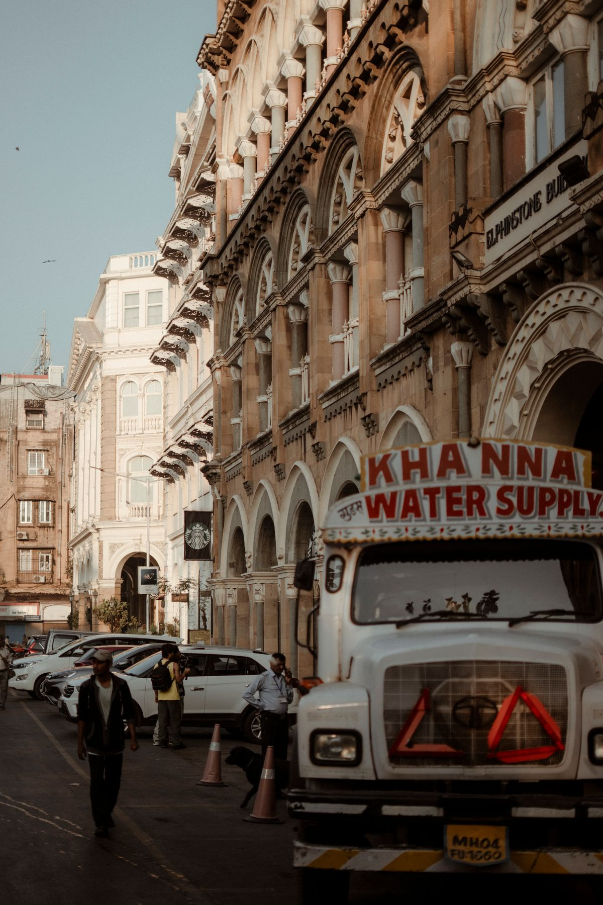
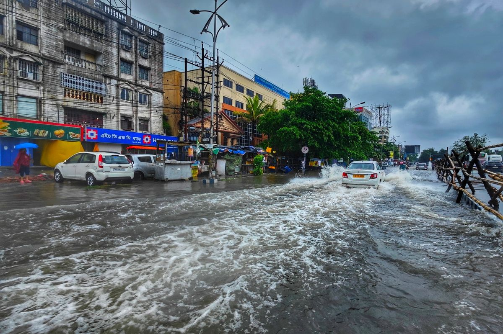
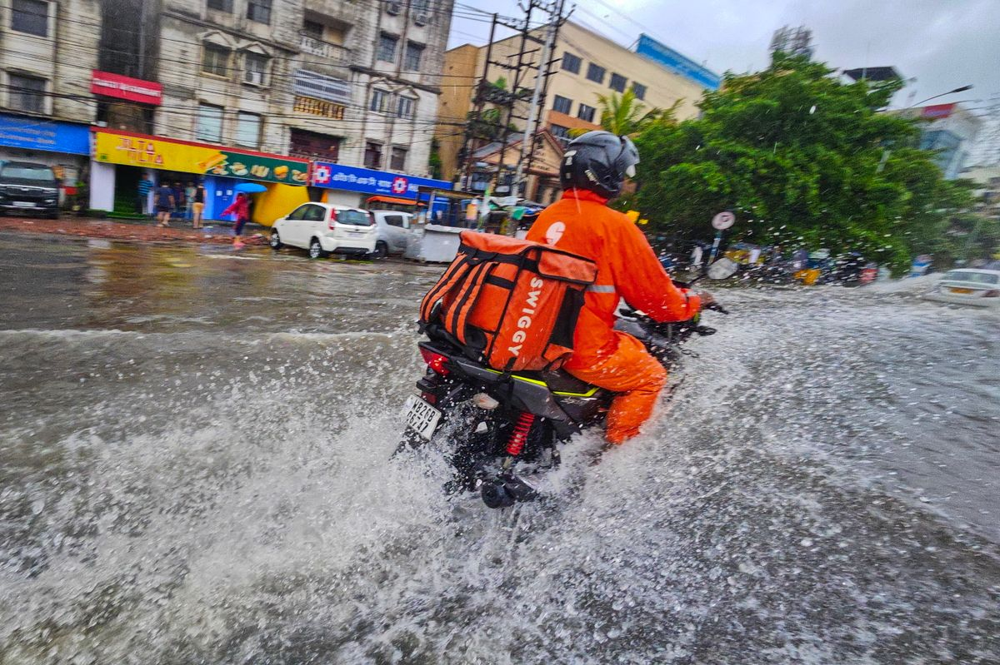
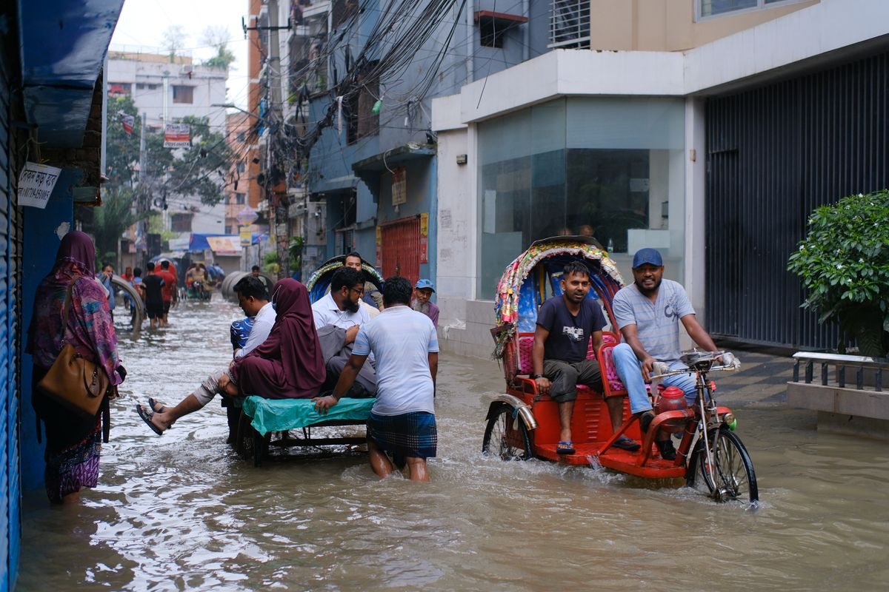
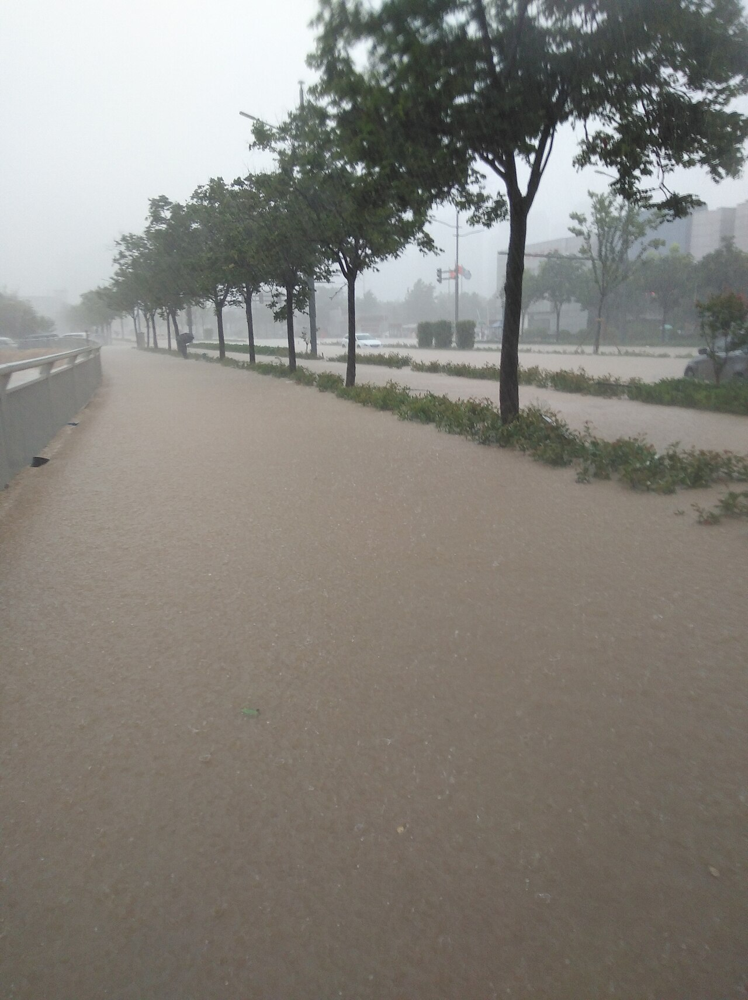

Delhi ran dry and flooded in June 2024. One water system made both, and decided who paid.
Bengaluru, Delhi and Zhengzhou, read through technocratic, bureaucratic and political ecology registers.

Water tanker on an Indian city street

Monsoon flooding on an Indian city street
A city that manages rain, rivers, groundwater and wastewater as one cycle, storing rain where it falls instead of draining it away.
Pipes and parks only work when institutions, access and maintenance change with them.
City water is shaped by people and capital, not rainfall alone. Buried pipes can hide who was never connected.

Flooded street in an Indian city during heavy rain
Ranganathan: flood risk is produced, and encroachment rules fall harder on some people.

Flooded street with rickshaws after heavy rain
Angelo & Anand: Delhi's water crisis is made beyond its boundary; pressure decides where water moves.

Zhengzhou street flooding, July 2021 Henan floods
Kaika & Swyngedouw: visible greenery counted for more than the pipes beneath it.
| Technical cause | What decided the outcome | Who carried the risk | |
|---|---|---|---|
| Bengaluru | Lake cascade broken; aquifers over-pumped | Land markets and selective enforcement | Settlers on filled channels; tanker-fed periphery |
| Delhi | Imported water, leaks and blocked drains | Split authority and the tanker economy | Poorer zones and unauthorised colonies |
| Zhengzhou | Rain far beyond sponge design limits | Spending priorities and ignored warnings | Metro and tunnel users |
Harvey (2008): the right to the city includes the power to change how water is governed: where it goes, who decides and whom it reaches.